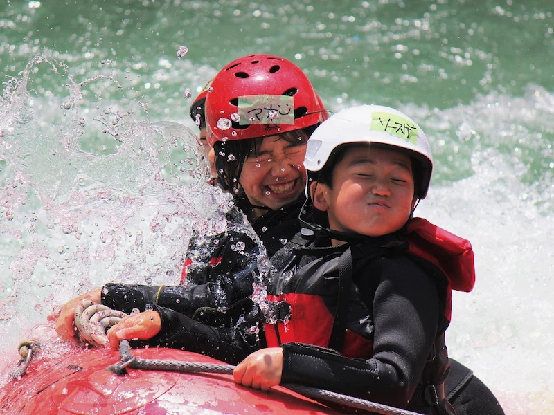
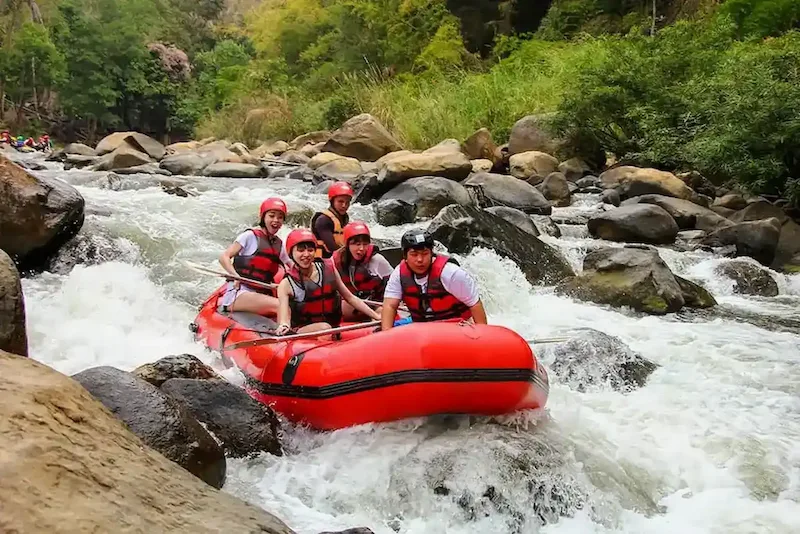
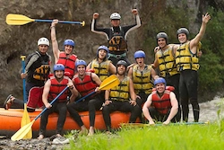
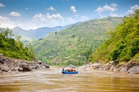
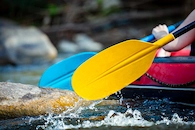
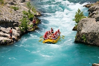

AMANI Rafting Association company is one of the company for maintaining the happiness of people through trips in rivers. Our mission is to make the society feel more comfortable with water. Enjoy your life together with Rafting Company.



AMANI Rafting Association company is one of the company for maintaining the happiness of people through trips in rivers. Our mission is to make the society feel more comfortable with water. Enjoy your life together with Rafting Company.
AMANI Rafting Association Company Started experiencing trips since 2021 after the outbreak of COVID-19. It helped from different parts of the world to use water for tavelling at every corner of the world.

It is not only that also ARAC has changed the meaning of water transport. It increased the number of people who use water transport by 50% within four years from 2021 to 2025. It also increased economcs more than 70% in 2024.




